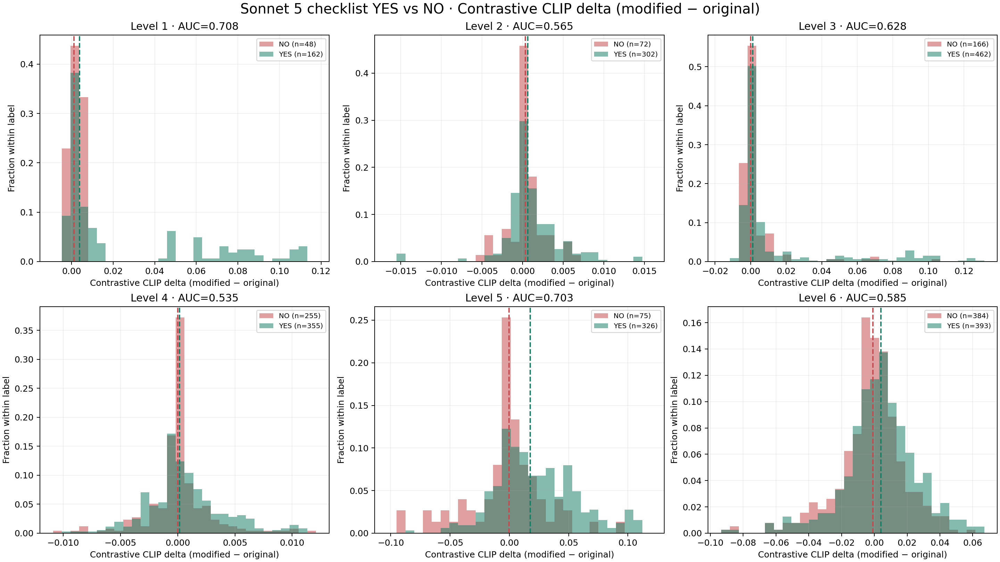
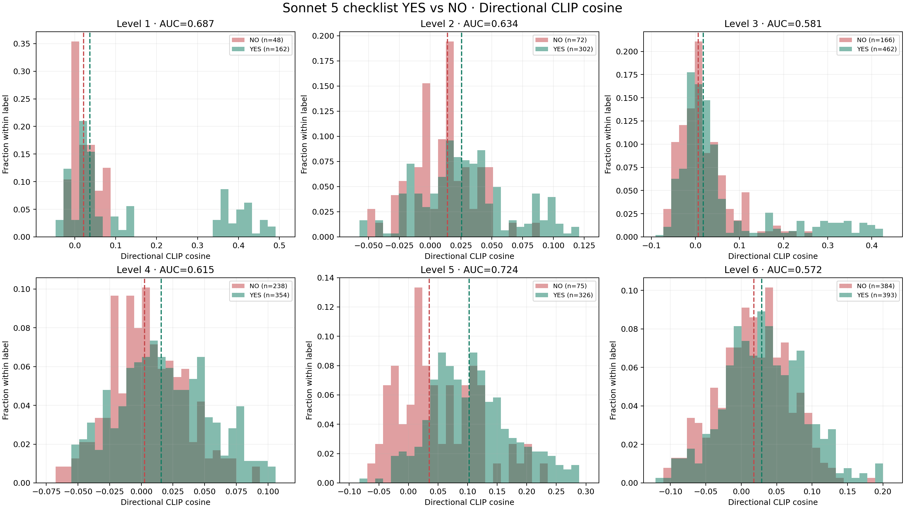
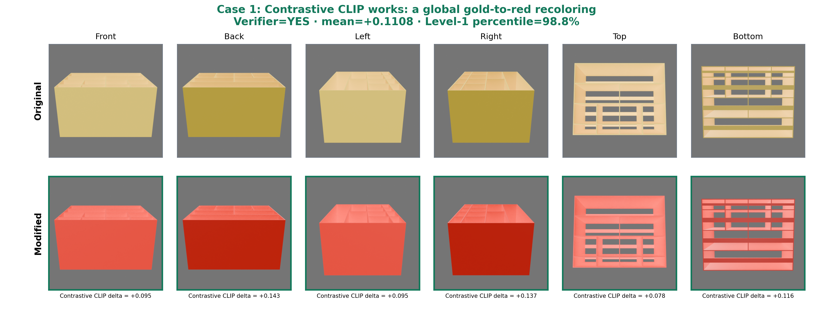
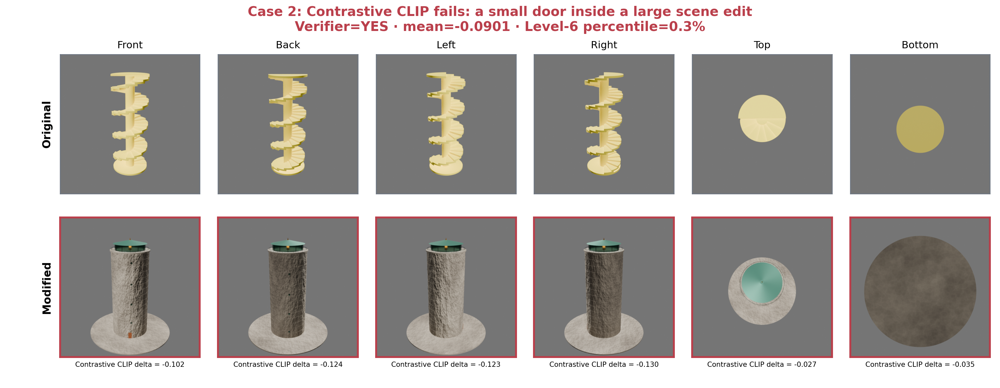
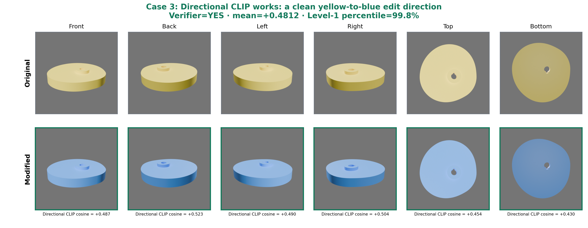
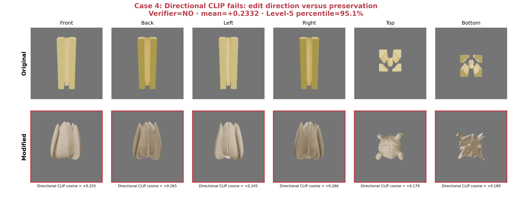

Scale & visibility
Independent normalization hides size changes; small or internal targets disappear from views.
Our audit shows that error comes from four places: task definition, evidence generation, verifier modality, and response protocol. Sonnet 5 capability is only one part of the system.
All 92 observed zero-score L1 outputs made the intended literal or parameter change and had no render failure. The audit identifies 59 clear false negatives, 11 semantically invalid tasks, and 22 edits whose target was too small, normalized away, or occluded. A VLM cannot reliably infer global dimensions from independently normalized images or metadata from RGB.
Each level needs evidence that matches the fact being asserted.
Independent normalization hides size changes; small or internal targets disappear from views.
Some failures are real, but identical pixels receive different labels and details remain hidden.
Object names and exact values are scene-state facts, not reliably visible image properties.
Visual contact does not prove a merge; a Boolean union or through-hole needs mesh inspection.
Subjective semantics need anchors and a separate check that object identity remains intact.
Object existence, relative scale, support, occlusion, and global coherence must be disentangled.
The proposed evaluator makes “no evidence,” invalid tasks, runtime failure, and judge errors first-class states instead of silently converting all of them to model failure.
Check task semantics and whether an official edit produces measurable evidence.
Freeze Blender environment; report runtime status separately from task score.
Capture objects, transforms, materials, modifiers, mesh, and relation graph.
Shared cameras plus RGB, ID, depth, normals, wireframe, and target close-ups.
Typed deterministic checks first; VLMs for semantics with disagreement and abstention.
| Task class | Count | Recommended verifier | Action |
|---|---|---|---|
| A · Visually retainable | 15 | Task-aware VLM + protocol guards | Keep, calibrate |
| B · Hybrid required | 142 | Scene/geometry checks + targeted visual evidence | Redesign evidence |
| C · Not currently scoreable | 3 | None under current task definition | Remove or rewrite |
| D · Semantic multi-judge | 80 | Structured checks + anchored, cross-family VLMs | Add adjudication |
We compare two six-view CLIP scores against existing Sonnet 5 YES/NO checklist labels. They are useful ranking signals, but not replacements for typed verification.
Asks whether each modified view moved toward the satisfied description relative to the original.
Aligns the visual direction of change with the textual direction of the requested edit.
Contrastive CLIP macro AUC across L1–L6. Strongest on global color/material changes.
Directional CLIP macro AUC. Slightly stronger overall, still only moderate separation.
YES means Sonnet 5 judged the checklist item satisfied. These labels are not independent human truth, and Sonnet 5 also generated the CLIP captions.


“Effective” means agreement with the existing verifier label. “Ineffective” means a high-confidence disagreement, not necessarily that Sonnet 5 is ground truth.

Gold → red is visible in every view. Positive and negative captions differ primarily in color, producing a 98.8th-percentile YES score.

The wooden door occupies a small region inside a large scene rebuild. Whole-image semantics dominate, producing a high-confidence false negative.

Object and framing remain stable while yellow becomes blue. All six image-difference vectors align with the text change.

The artifact moves strongly toward “organic,” but loses its extrusion identity. Directional CLIP rewards change without enforcing the invariant.
The practical evaluator is a cascade: deterministic scene checks for measurable facts, cheap embedding or CV signals for triage, and task-aware VLM adjudication for unresolved semantics.
Names, dimensions, counts, topology, and relations should be measured from the final scene.
Share cameras across before/after and add close-up, section, ID, depth, and wireframe views.
Report no-evidence, invalid-task, judge-error, and disagreement separately from model failure.